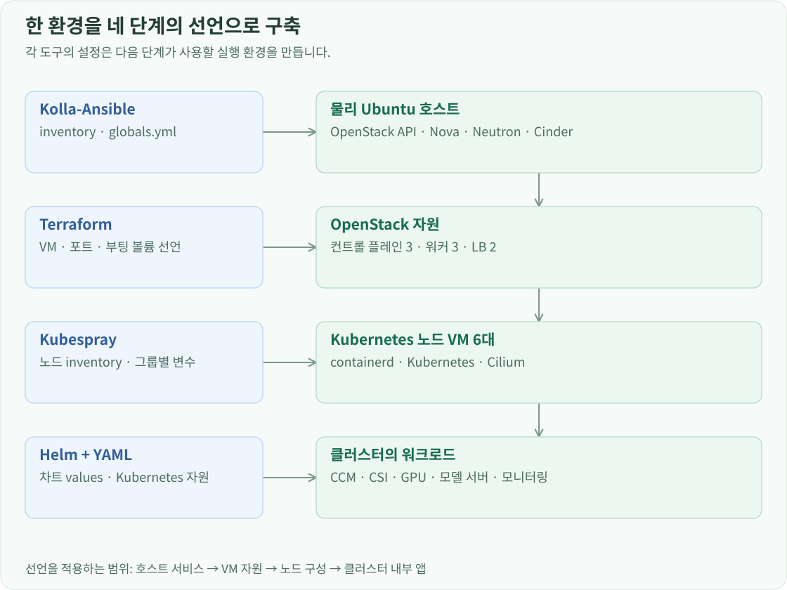

구축 개요
Ubuntu 데스크탑 한 대에 Kolla-Ansible로 OpenStack을 배포했습니다. Wi-Fi 인터넷 연결은 유지하면서 VM용 외부망을 만들고, 추가 SSD는 Cinder 백엔드로 연결했습니다.
물리 장비와 구축 도구 선택
물리 호스트에는 Ubuntu 24.04를 사용하고, QEMU/KVM으로 VM을 실행하며 libvirt로 VM의 구성과 실행 상태를 관리했습니다. OpenStack은 이 VM의 생성·삭제뿐 아니라 네트워크와 볼륨을 API로 관리하는 기반으로 선택했습니다. OpenStack 설치에는 Kolla-Ansible을, VM 구성에는 Terraform을, VM 위의 Kubernetes 설치에는 Kubespray를 사용했습니다. OpenStack 서비스를 개별적으로 수작업 설치하기보다 Kolla의 컨테이너 배포와 설정 관리 흐름을 사용하고, VM과 클러스터도 선언한 구성으로 다시 적용할 수 있게 했습니다. Kubernetes 안에 설치하는 운영 구성요소는 Helm values와 YAML로 관리합니다.

이렇게 나눈 이유는 다시 만드는 단위가 다르기 때문입니다. OpenStack 설치 설정은 호스트의 서비스와 네트워크를 결정합니다. Terraform 설정은 몇 대의 VM에 어떤 IP·Flavor·디스크를 줄지 결정합니다. Kubespray는 그 VM들을 Kubernetes 노드로 구성합니다. 모델을 교체하거나 WebUI 설정을 바꾸는 작업은 그 위의 Kubernetes 자원만 변경하면 됩니다.
VM 구성을 관리하는 계층과 실제로 실행하는 계층은 다릅니다. Nova·libvirt가 VM 구성을 관리하고, QEMU와 호스트 커널의 KVM이 실행을 맡습니다.
| 기반 자원 | 현재 구성 | 사용하는 곳 |
|---|---|---|
| CPU | Ryzen 9 5900X, 12코어·24스레드 | OpenStack 서비스와 VM의 vCPU |
| 메모리 | 장착 48 GB, OS 인식 약 46 GiB | 호스트 서비스와 VM 메모리 |
| GPU | RTX 2060 SUPER 8 GiB | GPU 워커 VM에 PCI passthrough |
| 호스트 부팅 디스크 | Lexar NM620 512 GB | Ubuntu와 OpenStack 컨테이너 |
| Cinder 전용 SSD | Micron 512 GB + Samsung 256 GB | VM 부팅 볼륨과 Kubernetes PVC |
| 인터넷 연결 | wlo1, 192.168.50.217/24 |
관리 API 접근과 VM의 외부 통신 |
현재 OpenStack은 2026.1, Kubernetes는 v1.36.4, containerd는 2.3.5, Cilium은 1.20.2입니다. 모델 서버는 llama.cpp에서 Qwen3.5-9B Q4_K_M을 실행합니다.
작업 위치도 구분했습니다. 물리 호스트에서는 Kolla와 호스트 네트워크·스토리지·VFIO를 설정합니다. Mac에서는 Terraform, Kubespray, kubectl, Helm을 실행해 원격 자원을 관리합니다. 여러 노드의 역할과 통신을 다뤄 보기 위해 컨트롤 플레인 3대와 LB 2대를 구성했습니다. 모두 같은 데스크탑 위의 VM이므로 물리 서버는 하나이고, 노드 구성과 서비스 이중화는 VM 단위로 이루어집니다.
설치에 필요한 호스트 준비
Wi-Fi·가상 외부망·NAT 설정으로 VM의 외부 통신 경로를 만들었습니다. Cinder는 파일 기반 LVM으로 시작하고 추가 SSD를 프로젝트 전용 백엔드로 등록했습니다. GPU 워커에 넘길 카드는 VFIO와 Nova PCI alias로 준비했습니다.
Kolla-Ansible로 OpenStack 설치하기
호스트 네트워크와 초기 파일 기반 Cinder VG를 준비한 뒤 Kolla-Ansible의 all-in-one 인벤토리로 OpenStack을 설치했습니다. API, 스케줄러, 컴퓨트, 네트워크, 스토리지 역할을 이 호스트 한 대가 담당합니다. Kolla는 OpenStack 서비스와 MariaDB·RabbitMQ 같은 기반 서비스를 컨테이너로 배치합니다.
설치 설정에서 이 환경을 결정하는 값은 다음과 같습니다.
kolla_base_distro: ubuntu
openstack_release: "2026.1"
kolla_internal_vip_address: "192.168.50.254"
network_interface: wlo1
neutron_external_interface: veth-ex
neutron_plugin_agent: openvswitch
enable_neutron_provider_networks: "yes"
nova_compute_virt_type: kvm
enable_horizon: "yes"
enable_cinder: "yes"
enable_cinder_backend_lvm: "yes"
enable_cinder_backup: "no"
network_interface는 관리 통신에 사용할 Wi-Fi 인터페이스입니다. neutron_external_interface는 호스트 네트워크 설정에서 만든 OpenStack 외부망 쪽 인터페이스입니다. 두 역할을 분리했기 때문에 Wi-Fi 연결을 유지하면서 VM의 외부 통신 경로를 만들 수 있습니다.
OpenStack API와 Horizon의 공통 접근 주소는 192.168.50.254입니다. 뒤에서 만드는 Kubernetes용 VIP 10.0.0.30과는 다른 주소입니다. 하나는 OpenStack 서비스를 관리하기 위한 주소이고, 다른 하나는 VM 안의 Kubernetes와 애플리케이션에 접속하기 위한 주소입니다.
배포 도구를 설치하기 전에 호스트에 빌드·스토리지·네트워크 도구를 준비했습니다.
sudo apt install -y git python3-dev libffi-dev gcc libssl-dev python3-venv lvm2 nftables network-manager
Python 개발 헤더와 컴파일 도구는 배포 도구의 의존성 설치에, lvm2는 Cinder 저장소에, nftables와 NetworkManager는 호스트의 네트워크 경로를 설정하는 데 사용합니다.
Kolla-Ansible은 시스템 Python과 분리한 가상환경에 설치했습니다.
python3 -m venv ~/.venvs/kolla-2026.1
source ~/.venvs/kolla-2026.1/bin/activate
python -m pip install 'kolla-ansible==22.1.0' python-openstackclient
venv는 배포 도구의 패키지를 별도 디렉터리에 두고, activate는 현재 셸에서 그 Python을 사용하게 합니다. Kolla-Ansible 버전을 고정해 배포 동작을 맞추고, python-openstackclient는 배포 후 OpenStack API로 자원을 생성·조회하는 데 사용했습니다.
설정 파일과 인벤토리는 설치된 Kolla-Ansible의 예제에서 준비했습니다.
mkdir -p ~/openstack-deploy
sudo mkdir -p /etc/kolla
sudo cp -a ~/.venvs/kolla-2026.1/share/kolla-ansible/etc_examples/kolla/. /etc/kolla/
cp ~/.venvs/kolla-2026.1/share/kolla-ansible/ansible/inventory/all-in-one ~/openstack-deploy/
sudo ~/.venvs/kolla-2026.1/bin/kolla-genpwd
cd ~/openstack-deploy
/etc/kolla에 서비스 설정을 두고 작업 디렉터리에는 대상 호스트 목록을 둡니다. cp -a는 예제 파일의 속성과 디렉터리 구조를 유지해 복사합니다.
all-in-one 인벤토리는 서비스를 실행할 호스트를, globals.yml은 위의 배포 설정을 담습니다. kolla-genpwd로 서비스 사이에서 사용할 비밀번호를 준비했습니다. 가상환경과 관리자 권한을 준비한 호스트의 배포 셸에서 수행하는 핵심 단계는 다음과 같습니다.
kolla-ansible install-deps
kolla-ansible bootstrap-servers -i all-in-one
kolla-ansible prechecks --use-test-images -i all-in-one
kolla-ansible pull -i all-in-one
kolla-ansible deploy -i all-in-one
kolla-ansible post-deploy -i all-in-one
-i all-in-one은 모든 단계에 같은 대상 호스트 목록을 사용한다는 뜻입니다. install-deps는 Ansible 의존성을 준비하고, bootstrap-servers는 호스트와 컨테이너 실행 환경을 준비합니다. prechecks는 배포 전제조건을 검사하며 --use-test-images는 검사에 테스트 이미지를 사용하도록 합니다. pull은 서비스 이미지를 내려받고, deploy는 설정을 생성해 컨테이너를 실행합니다. 마지막 post-deploy는 관리 클라이언트에서 사용할 인증 설정을 만듭니다. 실제 sudo 실행에서는 가상환경의 PATH와 Ansible collection 경로를 전달해 같은 도구를 사용했습니다.
Nova는 VM의 생명주기와 스케줄링을, Neutron은 네트워크·포트·라우터·보안 그룹을, Glance는 부팅 이미지를, Cinder는 볼륨을 담당합니다. Keystone은 이 API들의 인증과 프로젝트 범위를 제공하고, Placement는 컴퓨트 자원의 용량과 할당을 관리합니다. Horizon에서는 이 자원들을 웹으로 확인합니다.
서비스 배포가 끝나도 Kubernetes용 VM이 곧바로 생기지는 않습니다. Ubuntu 24.04 cloud image를 Glance에 등록하고, public provider network와 private 네트워크·서브넷을 만들었습니다. lab-router에 사설 서브넷을 연결하고 외부 게이트웨이를 지정해 앞에서 준비한 호스트 NAT까지 통신이 이어지게 했습니다. 이후 사용할 SSH 키 페어·Flavor·보안 그룹을 준비하고, 저장소는 별도의 SSD 백엔드로 확장했습니다.
Terraform으로 역할별 VM과 접속 주소를 구성하면 Kubernetes를 설치할 대상이 준비됩니다.